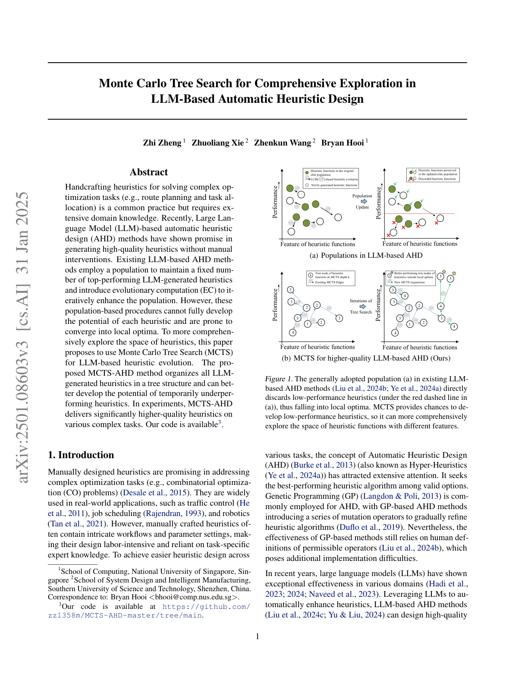
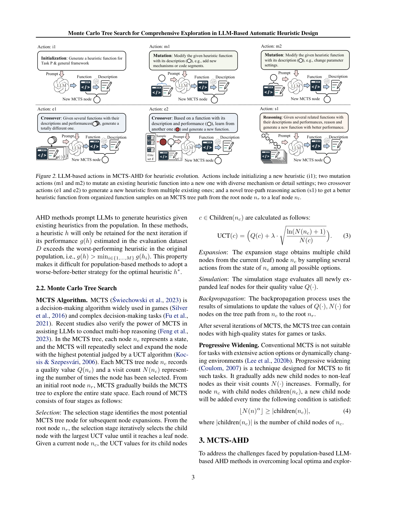
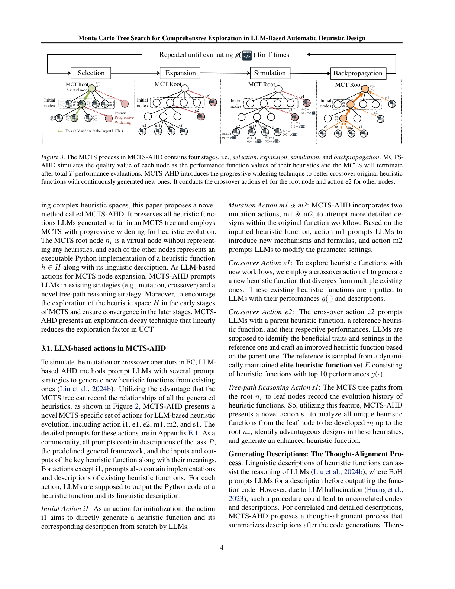
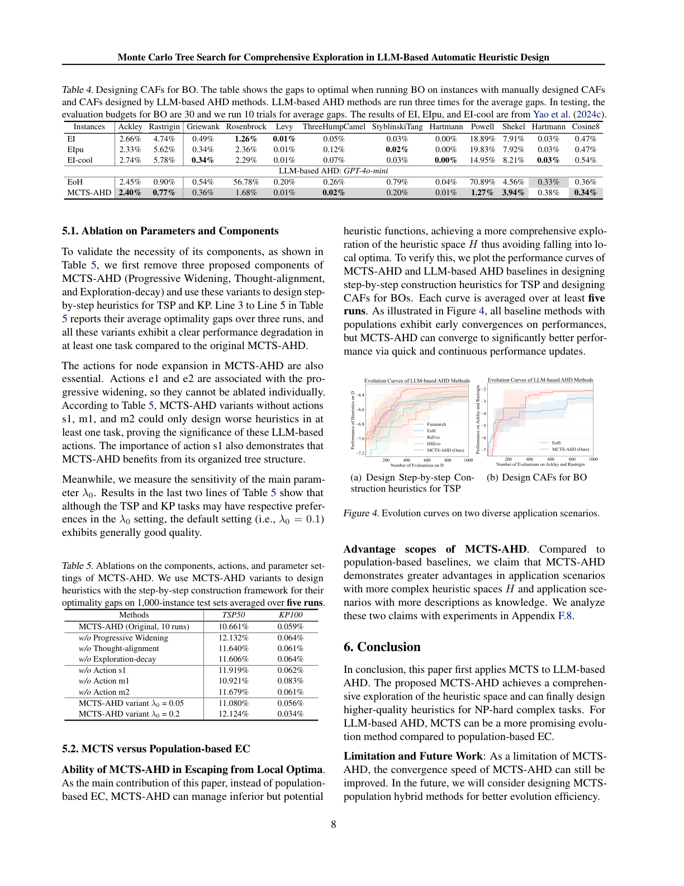

为复杂优化任务（如路径规划、任务分配）手工设计启发式是常见做法，但需要大量领域知识。近期，基于大语言模型（LLM）的自动启发式设计（AHD）方法在无需人工干预的情况下生成高质量启发式方面展现出前景。现有的 LLM 基 AHD 方法采用一个"种群（population）"来维护固定数量的、表现顶尖的 LLM 生成启发式，并引入进化计算（EC）来迭代增强该种群。然而，这些基于种群的过程无法充分发掘每个启发式的潜力，且容易收敛到局部最优。为了更全面地探索启发式空间，本文提出使用蒙特卡洛树搜索（MCTS）来进行 LLM 基的启发式进化。所提出的 MCTS-AHD 方法将所有 LLM 生成的启发式以树结构组织，能更好地发掘暂时表现不佳的启发式的潜力。实验中，MCTS-AHD 在各种复杂任务上给出了显著更高质量的启发式。
手工设计的启发式在解决复杂优化任务（如组合优化 CO 问题）方面前景广阔，广泛应用于交通控制、作业调度与机器人等领域。然而，手工启发式常包含复杂的工作流与参数设置，使其设计劳动密集且依赖特定任务的专家知识。为实现跨任务的更易设计的启发式，自动启发式设计（AHD）（亦称超启发式）受到广泛关注，它旨在有效选项中寻找性能最佳的启发式算法。遗传编程（GP）常用于 AHD，但效果仍依赖人工定义的允许算子。
近年来，大语言模型（LLMs）在诸多领域展现出卓越效能。借助 LLM 自动增强启发式，LLM 基 AHD 方法（如 EoH、Funsearch）能将 LLM 创新地应用于 AHD，设计出的通用框架（如贪心构造、带搜索思想）内的关键启发式函数，而非从头开发启发式。这些方法维护一组基于评估数据集性能的杰出启发式函数，并迭代地提示 LLM 以已有启发式为起点生成新启发式。EoH 开发了多种提示策略；ReEvo 引入反思机制；HSEvo 提出多样性度量与和声搜索以提高种群多样性。但这些基于种群的方法为聚焦顶尖表现者而淘汰劣质启发式，使得低表现启发式在经若干步 LLM 精炼后仍可能脱颖而出的潜力被浪费，如图 1 所示，种群结构可能引导启发式进化陷入次优局部最优。

为解决这些缺陷，本文提出 MCTS-AHD——首个面向 LLM 基 AHD 的树搜索方法，它对迄今生成的所有启发式函数采用树结构，并使用带渐进展开（progressive widening）技术的 MCTS 算法来引导后续启发式的进化。其优势为：(1) 不直接丢弃劣质启发式函数，而是允许在暂时表现不佳的启发式上做 LLM 基进化，同时聚焦表现更好者，实现对启发式空间更全面的探索；(2) MCTS 的树结构有利于 LLM 基启发式精炼，MCTS-AHD 提出新颖的树路径（tree-special）提示策略，以树上组织的函数样本启发 LLM。此外，MCTS-AHD 提出探索衰减（exploration-decay）技术（随算法推进线性降低 MCTS 分支率），并给出新颖的思维对齐（thought-alignment）过程以生成函数的精确语言描述。实验中，MCTS-AHD 在多种 NP-hard CO 问题与贝叶斯优化（BO）相关任务上取得了显著更高质量的启发式。
AHD：对给定任务 $P$（如 CO 问题），AHD 方法在启发式空间 $H$ 中搜索最佳启发式 $h^*$：
启发式空间 $H$ 包含任务 $P$ 的所有可行启发式；启发式 $h\in H$ 是映射实例集 $I_P$ 到解集 $S_P$ 的算法，即 $h:I_P\to S_P$。函数 $g(\cdot):H\to\mathbb{R}$ 是性能度量。对最小化目标函数 $f:S_P\to\mathbb{R}$ 的 CO 任务，AHD 通过在任务特定数据集 $D$ 上评估启发式来估计 $g$：
为使 LLM 聚焦关键设计，AHD 通常预定义通用框架并仅设计其中具指定输入输出的关键启发式函数（如 TSP 逐步构造框架中选择下一城市）。LLM 基 AHD：现有方法维护 $M$ 个启发式函数 $\{h_1,\dots,h_M\}$ 的种群并用 EC 迭代更新；模仿 EC 的变异或交叉，提示 LLM 以种群中已有启发式为输入生成新启发式。仅当新启发式在评估集 $D$ 上的性能 $g(h)$ 超过原种群最差者（即 $g(h)>\min_i g(h_i)$）时才被保留——这使其难以采用"先差后好"的策略来求得最优 $h^*$。
MCTS 算法。 MCTS 是广泛用于游戏与复杂决策的规则化决策算法。在 MCTS 树中，每个节点 $n_c$ 表示一个状态，MCTS 通过 UCT 算法反复选择并扩展潜力最高的节点。每个节点记录质量值 $Q(n_c)$ 与访问计数 $N(n_c)$。从根节点 $n_r$ 出发，MCTS 逐步建树以探索整状态空间，每轮包含四个阶段：
渐进展开（Progressive Widening）。 传统 MCTS 不适合动作选项众多或环境动态变化的任务。渐进展开技术随访问计数 $N(\cdot)$ 增加逐步为非叶节点添加新子节点：当满足 $\lfloor N(n)^\alpha\rfloor\ge|\text{children}(n_c)|$（公式 4）时添加新子节点。
为应对基于种群的 LLM 基 AHD 在克服局部最优与探索复杂启发式空间上的挑战，本文提出 MCTS-AHD。它将迄今 LLM 生成的所有启发式函数保留在 MCTS 树中，并用带渐进展开的 MCTS 进行启发式进化。MCTS 根节点 $n_r$ 为不表示任何启发式的虚拟节点；其余每个节点表示启发式函数 $h\in H$ 的可执行 Python 实现及其语言描述。MCTS-AHD 的 LLM 动作包括已有策略（变异、交叉）与新颖的树路径推理策略。此外，为在 MCTS 早期鼓励探索、后期确保收敛，MCTS-AHD 提出探索衰减技术，线性降低 UCT 中的探索因子。

如图 2，MCTS-AHD 提出一组新颖的动作：i1、e1、e2、m1、m2、s1。所有提示都含任务 $P$、预定义通用框架、关键启发式函数的输入输出及其含义；除 i1 外的动作还含已有启发式的实现与描述。每个动作要求 LLM 输出启发式函数的 Python 代码及其语言描述：
生成描述：思维对齐过程。 由于 LLM 幻觉，EoH 在输出代码前提示描述可能导致代码与描述不相关。MCTS-AHD 提出思维对齐过程：在代码生成之后总结描述。因此执行所有动作需调用 LLM 两次——第一次生成代码，第二次（显著更短）用最多三句话生成语言描述，不会严重增加执行时间与 token 成本。

如图 3，MCTS-AHD 先生成 $N_I$ 个初始节点连到虚拟根节点，随后反复执行四阶段直至启发式评估次数达上限 $T$。
其中 $q_{\max},q_{\min}$ 为 MCTS 中曾遇质量值的上下限。从根迭代选 UCT 最大子节点直至叶节点。
渐进展开。 设 $\alpha=0.5$；当公式 (4) 满足时，若根节点达标则调用 e1（输入从 2–5 个不同子树均匀选取），其他节点达标则调用 e2。最终 MCTS-AHD 输出全程性能最高的启发式函数。
探索因子 $\lambda$ 决定 MCTS 在探索与利用上的偏好。为前期更全面探索、后期确保收敛，MCTS-AHD 线性衰减 $\lambda$：
尽管任务特定的 $\lambda_0$ 有助高质量，MCTS-AHD 力求泛化，故对所有任务设 $\lambda_0=0.1$。
本节在 NP-hard CO 问题与 BO 的代价感知采集函数（CAF）设计任务上评估 MCTS-AHD，并实现多种通用框架（逐步构造、ACO、GLS、BO）。设置：初始树节点 $N_I=4$、$\lambda_0=0.1$、$\alpha=0.5$；每启发式在 $D$ 上运行时间限 60 秒；包含 GPT-3.5-turbo 与 GPT-4o-mini。基线：手工启发式（Nearest-greedy、ACO、EI）、传统 AHD（GHPP）、同框架的 NCO 方法（POMO、DeepACO）、已有 LLM 基 AHD（Funsearch、EoH、ReEvo、HSEvo）。T=1000，每方法独立运行三次。在 0-1 背包问题上 T=1000 约耗时 3 小时、1M 输入 token、0.2M 输出 token、约 0.3 美元（GPT-4o-mini），相比基线无显著效率退化。
在 TSP、KP、CVRP、MKP、在线/离线 BPP、ASP 上评估。表 1 显示逐步构造框架下 TSP 与 KP：MCTS-AHD 在几乎所有测试集显著占优，超越手工与 EoH、Funsearch，且在 200 节点 TSP/KP 上比需任务特定训练的 NCO 方法 POMO 设计得更好。
表 1. 用逐步构造框架为 TSP 与 KP 设计启发式（6 个测试集，每集 1000 实例；下划线为同分布集；最优 Gap 加粗）。
| 任务 | 方法 | N=50 Gap | N=100 Gap | N=200 Gap |
|---|---|---|---|---|
| TSP | EoH(GPT-4o-mini) | 12.67% | 14.49% | 16.68% |
| Funsearch | 12.00% | 13.93% | 15.54% | |
| MCTS-AHD | 9.69% | 11.79% | 13.71% | |
| KP | EoH | 0.10% | 0.10% | 0.09% |
| Funsearch | 0.12% | 0.11% | 0.09% | |
| MCTS-AHD | 0.11% | 0.05% | 0.04% |
ACO 框架（表 2）： 在 TSP、CVRP、MKP、离线 BPP 上，MCTS-AHD 在所有同分布测试集与三个分布外测试集上显著领先 EoH、ReEvo，并一致超越手工 ACO 启发式，在 TSP 与 MKP 上超越 NCO 方法 DeepACO。
在线 BPP（表 3）： MCTS-AHD 在六个测试集上平均性能最优（平均 Gap 0.89%，低于各基线）。
表 2（摘要）. ACO 框架下 MCTS-AHD(GPT-4o-mini) 在 TSP/CVRP/MKP/离线BPP 的多数测试集上 Gap 最低（如 TSP N=50 为 0.00%、MKP N=100 为 4.48%）；表 3 在线 BPP 平均 Gap 0.89% 为各法最优。
为验证 CO 之外任务的表现，我们按 Yao 等人用 MCTS-AHD 设计 BO 的启发式 CAF（代价感知采集函数）。表 4 显示：在 12 个合成实例中的 6 个上，MCTS-AHD 设计的 CAF 优于手工 EI/EIpu/EI-cool 与 EoH，证明其在其他复杂优化任务上的强大能力。
表 4（摘要）. BO 的 CAF 设计：MCTS-AHD(GPT-4o-mini) 在 Rosenbrock、Levy、ThreeHumpCamel、StyblinskiTang、Hartmann、Cosine8 等 6/12 实例上 Gap 优于 EoH（如 Rosenbrock 1.68% vs EoH 56.78%）。
表 5 显示：移除渐进展开、思维对齐或探索衰减任一组件，至少在一个任务上性能下降；移除动作 s1、m1、m2 的变体也至多只能设计出更差的启发式，证明这些 LLM 基动作（尤其 s1）的重要性——s1 体现了 MCTS-AHD 受益于其有组织的树结构。默认 $\lambda_0=0.1$ 总体表现良好。
表 5（摘要）. 组件/动作/参数消融（TSP50/KP100 最优性 Gap）：原始 10.661%/0.059%；w/o Progressive Widening 12.132%/0.064%；w/o Thought-alignment 11.640%/0.061%；w/o Exploration-decay 11.606%/0.064%；w/o s1 11.919%/0.062%；w/o m1 10.921%/0.083%；w/o m2 11.679%/0.061%；λ0=0.05→11.080%/0.056%；λ0=0.2→12.124%/0.034%。
逃离局部最优的能力。 这是本文主要贡献：MCTS-AHD 能管理"劣质但有潜力"的启发式函数，实现更全面的启发式空间探索，避免陷入局部最优。图 4 显示：所有基于种群的基线都早早收敛，而 MCTS-AHD 通过快速持续的更新收敛到显著更好的性能。

MCTS-AHD 的优势范围。 相比种群基线，MCTS-AHD 在启发式空间 $H$ 更复杂、以及有更多描述作为知识的场景下展现更大优势（附录 F.8 实验分析）。
本文首次将 MCTS 应用于 LLM 基 AHD。所提出的 MCTS-AHD 实现了对启发式空间的全面探索，最终能为 NP-hard 复杂任务设计出更高质量的启发式。对 LLM 基 AHD 而言，相比基于种群的 EC，MCTS 是一种更有前景的进化方法。
局限与未来工作： MCTS-AHD 的收敛速度仍有改进空间；未来将考虑设计 MCTS-种群混合方法以获得更好的进化效率。